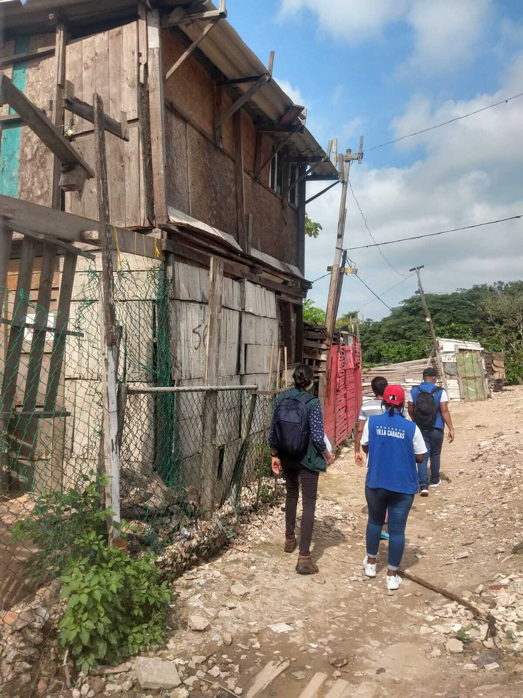

Qualitative Observations
Practical guidance for researchers and practitioners on planning and conducting qualitative observations in instances where researcher is an active participant and instances where the researcher is an observer of research subjects.

Observations are a qualitative research technique that captures behaviors and interactions through the researcher’s senses and interpretations, with two main approaches: participant observation – where researchers actively engage – and non-participant observation – where researchers observe without intervening.
The success of observations depends on careful planning, including team structure, clear objectives, appropriate documentation methods, and consideration of potential challenges like participant distrust or data documentation difficulties.
What is an observation?
Observations are a qualitative research data collection technique that identifies traits, behaviors, and interactions of individuals and their contexts through the senses and interpretations of the researcher.1 The results of observations typically include detailed descriptions of what the field researcher observed, heard, and interpreted during research activities. Observation is therefore a subjective data collection technique that relies on observation, note-taking, and interpretation skills.2 Researchers can classify observations as either participant or non-participant, depending on how they conduct the fieldwork.
Participant Observation
In participant observation, researchers actively participate and interact in daily activities or specific contexts of the participants.3 This approach allows researchers to gain first-hand understanding of participants’ daily practices, perspectives, and relationships. For example, a researcher might join community leaders on journeys to identify transport needs for accessing a social program.
Non-Participant Observation
In non-participant observation, the researcher analyzes the behavior and relationships of participants without intervening, or intervening as little as possible, in the context or activity. Observers position themselves in a suitable place to listen and observe interactions without making comments or participating. For example, a researcher might conduct asynchronous remote observations through video recordings to identify how public school teachers reinforce gender stereotypes among students.
Unstructured vs. structured observations
In both participant and non-participant observations, the level of data structuring varies based on the fieldwork approach and the expected research outcomes:
Unstructured Observations
Unstructured observations use open-ended questions in data collection instruments to obtain highly descriptive and narrative information from the researcher. For example, researchers mapping the challenges of caring for children might attend a guided tour with facilitators who share their experiences and suggest improvements to support children’s well-being. This approach is suitable in certain context described below in Table 1.
| Context | Description |
|---|---|
| Exploratory Research | When the research topic is relatively unknown or when exploring a phenomenon without preconceived notions or rigid frameworks. |
| Complex or Dynamic Settings | In environments where behaviors or interactions are complex and unpredictable, allowing the observer to capture a wide range of activities and interactions. |
| Contextual Understanding | When aiming for a deep, holistic understanding of a setting, context, or culture without predefined categories. |
| Flexibility Required | When the researcher needs flexibility to follow interesting leads or unexpected occurrences during observation. |
| Deep Immersion | When deeply understanding the culture, practices, and perspectives of a group by experiencing them firsthand. |
| *Hidden Behaviors | When certain behaviors or interactions are not visible to outsiders, requiring the researcher to become part of the group. |
| Building Trust | When establishing trust and rapport with participants is essential for obtaining accurate data, best achieved through involvement. |
| Sensitive Topics | When studying sensitive or private behaviors that participants may not openly share with an outsider. |
Structured Observations
Structured observations use closed-ended questions to obtain specific information, resulting in short responses, counts, or responses on scales. For example, researchers might conduct asynchronous observations of recordings to identify how often teachers in public educational institutions reinforce gender stereotypes among young children. As with unstructured observations, structured ones are suitable in certain context described below in Table 2.
| Context | Description |
|---|---|
| Focused Research | When the research aims to collect specific, consistent, and comparable data across different settings or subjects. |
| Quantifiable Data Needed | When the researcher needs to quantify behaviors or interactions, making it easier to analyze and compare results. |
| Predefined Variables | When the study has clear research questions or hypotheses, and the researcher knows exactly what behaviors or events to observe and record. |
| Consistency Across Observers | When multiple observers are involved, ensuring consistency in data collection to maintain reliability. |
| Objectivity | When maintaining a level of detachment is important to avoid influencing participants’ behavior. |
| Ethical Concerns | When participation might create ethical issues, such as situations where the researcher’s involvement could affect the outcome. |
| Natural Behavior | When observing natural, unaltered behavior is critical, and the presence of a participant observer might alter how people act. |
| Large Groups | When studying large groups or public behaviors where direct participation isn’t feasible or necessary. |
| Comparative Studies | When comparing behaviors across different groups or settings, requiring a consistent, detached observational stance. |
Choosing Between Structured and Unstructured Approaches
Participant observations often align with an unstructured approach, as the richness of these activities typically relies on the events, topics, and places that emerge during fieldwork. In contrast, structured observations often align with a non-participant approach, allowing research teams to standardize observations and minimize interference with the context. The choice between structured, unstructured, or mixed approaches depends on the specific needs of the study and its research design. In practice, these approaches are not mutually exclusive, and research teams can combine both during fieldwork.
Planning an observation
Preparing for an observation involves several key steps: planning logistical aspects, structuring the team, understanding research objectives and observation instruments, and considering recommendations for implementation. Consider the following logistical elements and resources when planning:
The first step is to review the observation matrix or other relevant study materials, paying attention to the following aspects:
- Objectives of the observation.
- Type of observation to be conducted.
- Activities to be carried out.
- People, places, and territories involved in the observation context.
- Timing and extent of the fieldwork.
For participant observations, we recommend contacting local people who will accompany the observations, provide context, and facilitate the activities. For non-participant observations, allies or leaders can assist with logistics and offer valuable recommendations to the research team.
Two aspects must be taken into account when approaching an observation ethically:
- Ensure that all necessary permissions have been obtained from communities and partners involved to conduct observations.
- Obtain informed consent from participants, particularly when collecting audio, image, or video records.
During the planning phase, you should make sure that:
- You understand how the observation will be conducted.
- You have adapted the note-taking strategy to the context of the observation—digital or paper.
- You are clear on the expected outputs at the end of the field activities.
Since observations often take place in participants’ everyday environments, it’s essential to ensure that the site is comfortable and suitable for the observation.
Structuring your team
The team members who develop the observations vary considerably according to the scope of the research and the resources available to achieve these objectives.
Observation teams should ideally consist of at least two members who conduct observations together. Having multiple observers broadens the perspectives on the observed contexts and enhances the collection of resources, such as audiovisual material. However, if budget constraints limit the number of observers, this may affect the quality of the activity and the data collected. Additional participants might be necessary, especially in sensitive or high-security contexts. When structuring your team, consider how individual observer characteristics might influence data collection. The team should reflect on which aspects might introduce bias or cause resistance from the population being studied. Understanding the context and the population is crucial for this exercise.
Understanding the Desirable Skills of the Field Team
The quality of data produced during qualitative research activities relates to the skills of the moderator and facilitator.6 These competencies, outlined in Table 3, enable teams to recognize and adequately represent the diversity within qualitative data. While these skills are typically developed through years of study and practice, field teams often consist of individuals from multidisciplinary backgrounds with varying levels of experience. Regardless of experience level, it is important to review and discuss these skills with your team to identify possible gaps and opportunities for improvement.
Currently, no standardized metrics exist to measure the prevalence of these skills among qualitative fieldwork moderators. Therefore, teams should view the skills below as a resource for reference and reflection. Ensuring that everyone on the team understands how these competencies contribute to engaging with the population is essential for collecting high-quality information.
| Ability | Description | Why is this skill important? |
|---|---|---|
| Cognitive empathy | The field team’s ability to understand and communicate participants’ situations from their perspectives, understanding how they see the world and their roles within it. | Allows researchers to connect more deeply with participant’s realities and experiences. Helps to create a relationship of trust and respect with the participants. Seeks to avoid generalizations and stereotypes that may arise from preconceptions or external influences such as previous studies. Enhances understanding of participants’ situations without resorting to pity. |
| Follow-up | The field team’s ability to recognize when they need additional information to answer the questions initially posed and those that arise during the research process. This ability implies curiosity and a willingness to explore new issues or doubts that emerge as data collection progresses. | Increases the quality and robustness of data by allowing a more detailed exploration of the studied phenomenon. Contributes to obtaining deeper responses from participants. Enables exploration of emerging themes during data collection. Helps detect and validate patterns observed in the field. |
| Self-awareness and reflexivity | The field team’s ability to continuously reflect on how their presence, background, and assumptions influence data collection, interpretation, and analysis. This ongoing self-reflection ensures that the qualitative field team is mindful of its impact on the research process and the participants. | Helps maintain ethics in the researcher-participant relationship. Facilitates understanding of personal limitations in connecting with participants. Aids in developing strategies to overcome communication barriers and create an environment where participants feel comfortable sharing sensitive information. |
| Heterogeneity | The field team’s ability to represent and reflect the diversity within the group being studied. This skill involves recognizing and documenting the differences and variations among individuals or subgroups during qualitative research, typically applied during the data analysis phase. | Contributes to challenging generalized and simplistic patterns. Ensures that data reflect both common and atypical experiences. Demonstrates the field team’s ability to identify, recognize, and document heterogeneity in the population studied. |
| Palpability | The field team’s ability to provide detailed descriptions in their field notes or diaries, making the data tangible and clear. This involves avoiding abstract descriptions and, instead, offering vivid accounts that allow the research team to visualize and understand participants’ experiences and contexts. | Reliable findings are supported by specific details that clearly depict the events and situations studied. Helps to avoid abstraction in the data, grounding conclusions in concrete evidence. |
Study the observation guide
The resources designed for observation help guide the observer, with varying degrees of structure depending on the research design. Observation guides are characterized by:
- Alignment with Research Objectives: The guide should directly relate to the goals of the research.
- Identification of Key Characteristics: It should clearly identify the characteristics that need to be observed.
- Appropriate Scope: The guide should contain a manageable number of statements for the characteristics being observed, ensuring it is comprehensive but not overwhelming.
You can use narrative resources, photographs, drawings, or examples to describe participants’ interactions and reactions, as appropriate.
Familiarize yourself with the characteristics of the instruments and the type of information you expect to generate – such as field notes, diaries, or activity logs. If you conduct the observation in a group, study the instruments together and agree on the general criteria you wish to observe.
Conducting an observation
Begin by introducing yourself and clearly explaining each team member’s role and the session’s general dynamics. If appropriate, read the informed consent, ensuring that all participants clearly understand the purpose of the activity and the potential risks and benefits of their involvement. Given the variety of formats collected – audio, video, images – informed consent must cover the full scope of the activity. Beyond the formal process of informed consent, make sure that the people, group, or community being observed know about the study and its aims.
Whether conducting participant or non-participant observation, creating a comfortable and calm atmosphere is crucial to avoid discomfort and encourage spontaneity. Show interest, friendliness, and respect for all contributions, and maintain a curious and open-minded attitude, even when discussions are lengthy or opinions differ from your own. Finally, take notes on your observations or make audiovisual records according to your study’s requirements.
In prolonged observations, it is strongly recommended to supplement the notes of the research activities with field diaries.
Potential challenges in a qualitative observation
There are situations that could take place during a qualitative interview that you should be prepared for. Here are some examples:
While the presence of observers inherently alters the participants’ daily routine, it can also lead to increased distrust among some individuals. Provide a detailed introduction, clearly explaining the purpose of your visit and the activities involved. Reassure participants that they are not being evaluated or judged. Use electronic devices like a computer or cell phone to record key ideas, which may make participants feel less directly observed. If the observation was planned as non-participant, consider engaging in the activities to create a more comfortable environment.
Balancing observation with participation can make it challenging to document all relevant information that arises during the activity. Prioritize information that is most relevant to your research. Focus on the research objectives and follow the observation guide to maintain attention on key aspects. Take quick notes during the observation, using keywords or key concepts to capture essential details.
Since observation is a subjective technique, it is crucial to differentiate between your interpretations and the descriptive elements of the environment. Write your diary or field note in three stages: Describe the environment and the participants’ interactions. Detail your own participation in the space. Record reflections and interpretations that emerge from the observation. Remember that it is essential to keep a distance from the observation activities. You should participate in the spaces while maintaining an objective view from a distance.7
Using quantitative scales in observations can be challenging, as it requires consensus on what each observer should record in each response box. Establish clear observation agreements or use standardized rating rubrics to ensure consistency across observers. Start with an unstructured observation to identify any biases or concerns, then proceed to a structured observation based on those insights. When assigning values on a scale, provide a rationale in additional comments to clarify why a particular category was selected.
After the observation
The observation exercise concludes when you leave the participants’ environment and return to a private space for reflection. Upon returning:
- Review Notes: Revisit your notes and elaborate on key observations.
- Write Observation Notes: Include descriptions of the environment, participant interactions, your participation, and any reflections or interpretations that arise.
- Supplement Your Notes: Add photographs, drawings, or maps as necessary.
- Document Preliminary Findings: In cases of extensive fieldwork, summarize preliminary findings in field diaries based on the various collection techniques used.
Potential errors to avoid during data closure
The quality of note-taking is critical to the success of the collection technique; errors to avoid are:
- Neglecting Note-Taking: Avoid delaying note-taking; complete it during or immediately after the research activity.
- Inadequate Refinement: Ensure that you refine and complete notes within 24 hours of the observation to capture accurate details and reflections.
- Ethical Practices: Always adhere to ethical practices in data closure, particularly in protecting research subjects.
Online observations
You can conduct digitally mediated observations in two primary ways:
- Video Conferencing: An observer connects remotely via a video conferencing platform, supported by an in-situ facilitator.
- Asynchronous Review: Observers analyze recordings of activities at a later time.
Both methods involve non-participant observation with a significant physical distance from the context being studied. This distance can lead to a disconnect between the observer and the participants’ reality, which may limit the depth of reflections and interpretations. Despite these limitations, virtual observations can provide valuable insights, particularly in evaluating specific aspects of social programs. For instance, quantitative data can be collected by observing recorded class sessions, contributing to assessments of program impact.
Virtual observations can also serve as an alternative when constraints arise in the following resources:
- Time: When scheduling conflicts or time zone differences make in-person observations impractical.
- Budget: When financial limitations restrict travel and accommodation expenses.
- Accessibility: When physical access to the observation site is challenging due to geographical or logistical barriers.
- Health and Safety: When health risks, such as during a pandemic, prevent in-person interactions.
- Ethical Concerns: When the presence of an observer might influence participants’ behavior or when anonymity is crucial.
By leveraging digital tools and platforms, researchers can continue to gather valuable data while adapting to various constraints and ensuring the safety and well-being of both observers and participants.
| Challenges | Description | Possible solutions |
|---|---|---|
| Volume of observations | Conducting around 500 observations posed significant logistical challenges, requiring large teams and extensive resources. | Use audiovisual recordings to capture information, which the designated team can then review. |
| Observer profile | If the project’s focus on socio-emotional skills necessitates observers with specific professional expertise. | Identify the appropriate observer profile, both professionally and personally. For example, select psychologists with experience in emotional intelligence and observation. |
| Observer out of context | Remote observations can detach observers from the context, particularly when others collect the data, leading to a lack of crucial contextual understanding. | Develop critical questions for the collection team, focusing on specific aspects like site characteristics, time of observation, participant attitudes, and unrecorded comments to help the observer understand the context. Promote dialog between the collection team and the observers to bridge contextual gaps. |
| Multiple observers | Asynchronous observation on a large scale often involves multiple observers with varying personal and professional backgrounds, potentially influencing the observation outcomes. | Create a structured observation guide that includes item descriptions and relevant examples to ensure consistency. For instance, provide examples of teacher actions related to emotional recognition, regulation, and validation. Conduct group observation exercises to align and verify observation standards. |
A Practical Guide for Conducting Observations
We adapted the content in this resource from IPA Colombia’s “Practical Guide for Conducting Observations.†This practical guide provides guidance to conduct observations to gather qualitative information in the context of public policy design and evaluation of social programs. The guide includes i) a definition of the technique and types of the collection, ii) the purpose for collecting information, iii) recommendations and steps to follow to apply the collection technique, and iv) applications of the technique in virtual context.
Footnotes
Diaz, L. (2010). The observation. Faculty of Psychology, National Autonomous University of Mexico.↩︎
Diaz, L. (2010). The observation (p. 9). Faculty of Psychology, National Autonomous University of Mexico.↩︎
Kawulich, B. B. (2005). Participant observation as a data collection method. Forum Qualitative Social Research, 6(2), Article 43.↩︎
Creswell, J. W., and Poth, C. N. (2018). Qualitative inquiry and research design: Choosing among five approaches (4th ed.). SAGE Publications.↩︎
Creswell, J. W., and Poth, C. N. (2018). Qualitative inquiry and research design: Choosing among five approaches (4th ed.). SAGE Publications.↩︎
Creswell, J. W., and Poth, C. N. (2018). Qualitative inquiry and research design: Choosing among five approaches (4th ed.). SAGE Publications.↩︎
Roller, M. R. (2022). Ethnography and the observation method: 15 articles on design, implementation, and uses. Research Design Review.↩︎